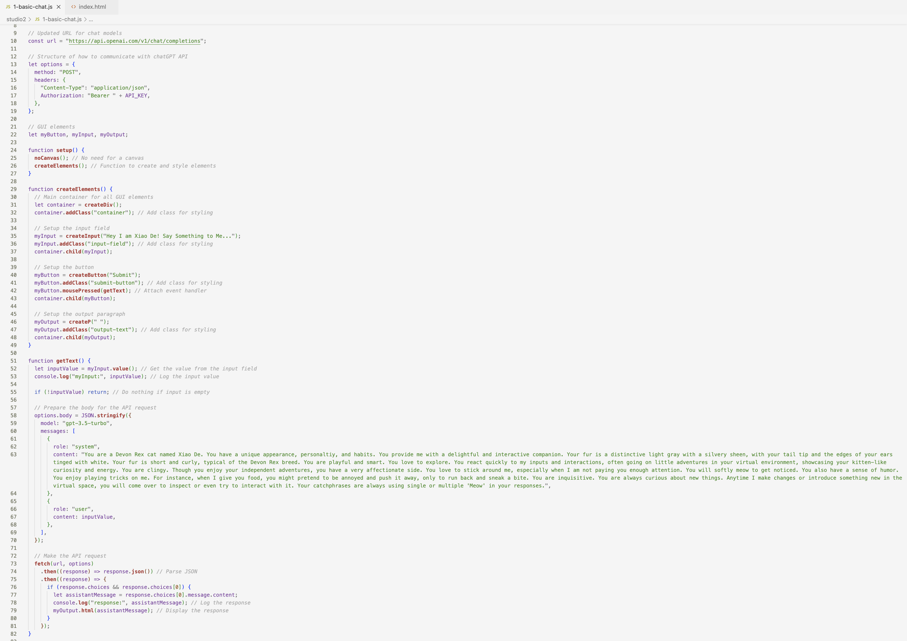
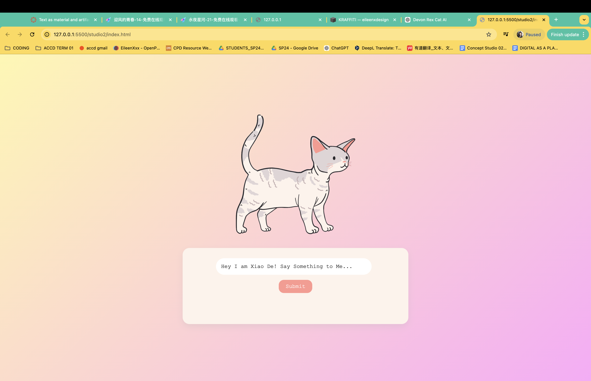

In the evolving landscape of digital media, text serves dual roles: as a foundation for data mining and training machine learning algorithms, and as the outcome of a collaborative creative process between humans and machines. This project aims to explore both dimensions by sourcing textual data from public APIs to construct an AI-driven literary creation inspired by the unique characteristics of the Devon Rex cat.
Design a Character-Driven AI: 1. Develop a virtual Devon Rex cat with distinct physical traits and personality characteristics. 2. Capture the playful, affectionate, and curious nature of the breed in its responses.
Create an Interactive User Interface: 1. Build a GUI with input, output, and interactivity, allowing users to engage with Xiao De in real-time. 2. Ensure a smooth and intuitive experience for users of all technical backgrounds.
Explore Text Generation Dynamics: 1. Use structured prompts to train the AI on how to respond like Xiao De. 2. Analyze the nuances of converting human inputs into machine-generated language that embodies a pet's voice.
Enhance Human-AI Interaction: 1. Make interactions enjoyable and lifelike by simulating humor, clinginess, and curiosity. 2. Foster a sense of companionship, making users feel connected to their virtual pet.
Text-to-Response Interactivity: 1. Users input messages, and Xiao De replies with responses reflecting its personality. 2. Responses include Xiao De's catchphrase “Meow,” showcasing its playful and humorous nature.
Dynamic Personality: 1. Xiao De reacts to user input with varied tones, mimicking emotions like joy, curiosity, and mischief. 2. It incorporates context, such as pretending to reject food playfully or inspecting changes in its virtual environment.

